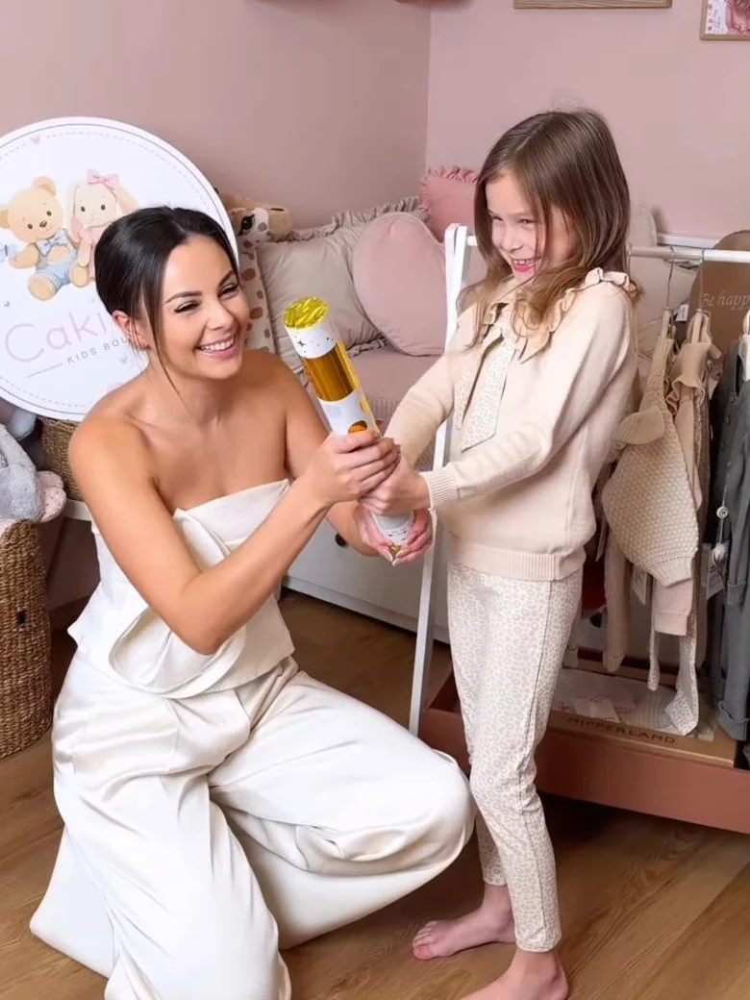
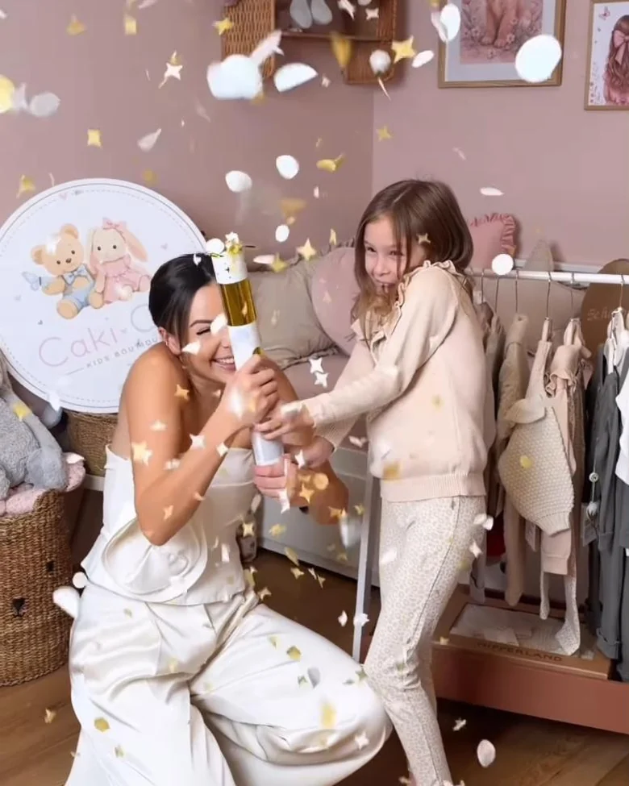

Pro holčičky
Flowers, Mašličky a Little Princess z bio bavlny GOTS. Něžné nude odstíny i trocha barev.
Na fotce Vybrat pro holčičkuPro chlapečky
Teplákovky COSY, Mořský svět, Zebra i prémiové pletené soupravy na zimu.
Na fotce Vybrat pro chlapečka
Ze srdce od Moniky Bagárové
Kousek radosti
pro každý obyčejně neobyčejný den
Dětské oblečení pro malé poklady · 0–3 roky
Kolik měří vaše miminko?
Velikost vybíráme podle tabulky Čakičak: podle výšky dítěte, a když je mezi dvěma velikostmi, doporučíme větší. Web si ji zapamatuje a u každého kousku hned uvidíte, jestli je ve vaší velikosti skladem.
„Jake mate velikosti pro holcicku?“
„COSY růžová už vyprodaná, budete naskladňovat?“
Vybráno s láskou
„Vím, že ne každá maminka má stejný vkus. Proto jsem myslela i na ty, které mají radši barevnější svět.“
Velikosti v cmpřeškrtnuté jsou vyprodané vaše velikost
Dárek k narození
Dopřejte malou radost sobě nebo svým blízkým. Kojenecké sety z bio bavlny GOTS ve velikosti 56 (0–3M) jako dárek k narození, na baby shower nebo jen tak.
„Pšššt… Našly jsme dárek, který vykouzlí úsměv každé novopečené mamince.“
Příběhy z @cakicak.cz
Sledovat na InstagramuMůj příběh · Cesta za Caki·Cak
„Odkud má Ruminkatohle oblečení?“
Jedna z nejčastějších otázek od vás vždycky byla právě tahle. A možná právě někde tam se začal rodit nápad na Caki·Cak.
Monika s Ruminkou
-

Otázky, které se opakovaly
Dětská móda mě bavila vždycky. Možná i víc než ta moje. A tak jste se mě často ptaly: odkud má Ruminka ten či onen kousek a kde jsem ho koupila?
-

Nápad, který nechtěl odejít
Dva, tři roky jsem ho měla v hlavě. Ten správný čas přišel až teď, kdy jsem měla chuť i odvahu pustit se do toho naplno a přinést Caki·Cak i vám.
-

Jedno jednoduché pravidlo
Kolekci jsem skládala podle sebe. Každý kousek musel projít zkouškou: vybrala bych ho pro svoji Ruminku? Hodně mi záleží na materiálech, a proto je řada kousků certifikovaná.
-

14. 10. 2026
Vítej na světě, Caki·Cak
Naše společná cesta právě začíná… A nejkrásnější na tom pro mě je, že inspirací pro celý tenhle příběh je právě ona. Moje holčička.
Budu moc ráda, když se ozvete
Dejte nám vědět, jak vám balíček dorazil, jak se vám líbí balení i materiál. Když nám pošlete fotku svého dítěte v oblečku, bude to pro nás úplně úžasné. Vůbec ji nemusíme zveřejňovat.
Monika
Bio bavlna s certifikací GOTS
Pěstovaná bez běžných pesticidů a chemického hnojení, s kontrolou celého řetězce výroby včetně barviv.
Doprava od 79 Kč
PPL, Balíkovna nebo GLS na výdejní místo i na adresu. Doručujeme po Česku a na Slovensku.
Vrácení do 14 dnů
Nesedí velikost? Zboží můžete vrátit do 14 dnů od převzetí, třeba zpětnou zásilkou přes Zásilkovnu.